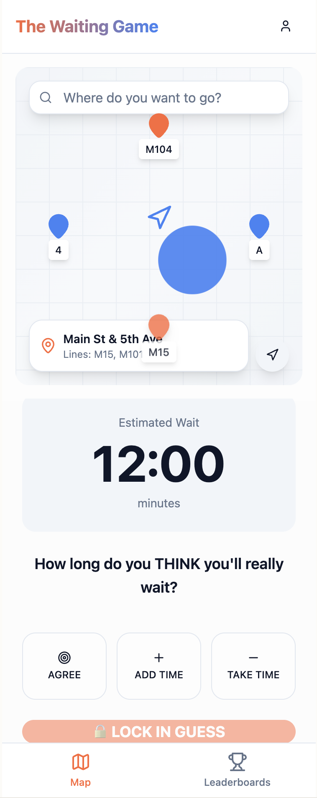

Application Requirements — Madrid Transit Companion
A simple transit navigation app with an educational twist. Find your route, discover your wait time, and learn about Madrid while you wait through location-based quizzes powered by linked Wikidata entities.
App Concept
Madrid Transit Companion helps users navigate Madrid's public transport system while making wait times more engaging. Users enter their destination, see the nearest stop and route information, and pass the waiting time with an educational quiz game about nearby places. The app demonstrates linked data by using pre-computed RDF links between transit stops and Wikidata cultural/historical entities.
How It Works
1. Enter Destination
User types or selects their destination. App uses GPS location to find the nearest transit stop and determines the best route.
2. View Route & Wait Time
Interactive map centers on the nearest stop, showing the route, stop name, next arrival time, and estimated wait duration calculated from GTFS schedule data.
3. Play Location Quiz
While waiting, user can play a Kahoot-style quiz about the local area. Questions are based on pre-linked Wikidata entities near the stop (landmarks, history, culture).
4. Learn & Discover
Each quiz answer shows linked data from Wikidata, teaching users about their surroundings and demonstrating the power of linked open data.
Data Usage — Two Linked Data Sources
GTFS Static Feed (Madrid CRTM)
Powers the transit navigation functionality:
stops.txt — Find nearest stops to user's GPS location (stop_lat, stop_lon, stop_name)routes.txt — Display route names and numbers (route_short_name, route_long_name)stop_times.txt — Calculate next arrival time and wait duration (arrival_time, departure_time)calendar.txt / calendar_dates.txt — Verify service operates today (weekday rules, exceptions)shapes.txt — Display route path on map (shape_pt_lat, shape_pt_lon)Wikidata Links
Pre-computed RDF links connect transit stops to nearby cultural/historical entities:
stop nearbyPlace landmark)User Interface
Transit Navigation Screen
Interactive map displays user location, highlights the nearest stop, shows the route to take, and presents clear wait time information. Simple, clean interface focused on getting users where they need to go.
Location Quiz Screen

Kahoot-style quiz interface presents questions about the local area. Users select answers and learn interesting facts about nearby landmarks, history, and culture sourced from Wikidata.
Key Features
- Real GTFS Data Integration: All transit information calculated from actual Madrid CRTM schedules
- GPS-Based Stop Detection: Automatic nearest stop finding using geocoordinates from
stops.txt - Route Visualization: Map shows route paths using
shapes.txtpolyline data - Schedule-Aware Calculation: Respects service calendars (weekday/weekend, exceptions) for accurate wait times
- Pre-computed Wikidata Links: RDF links stored in dataset connect stops to nearby landmarks and places
- Linked Data Demonstration: Shows how geographic coordinates enable linking across different RDF datasets
- Educational Content: Users learn about their surroundings while waiting for transit
- Mobile-First Design: Clean, simple interface optimized for on-the-go use